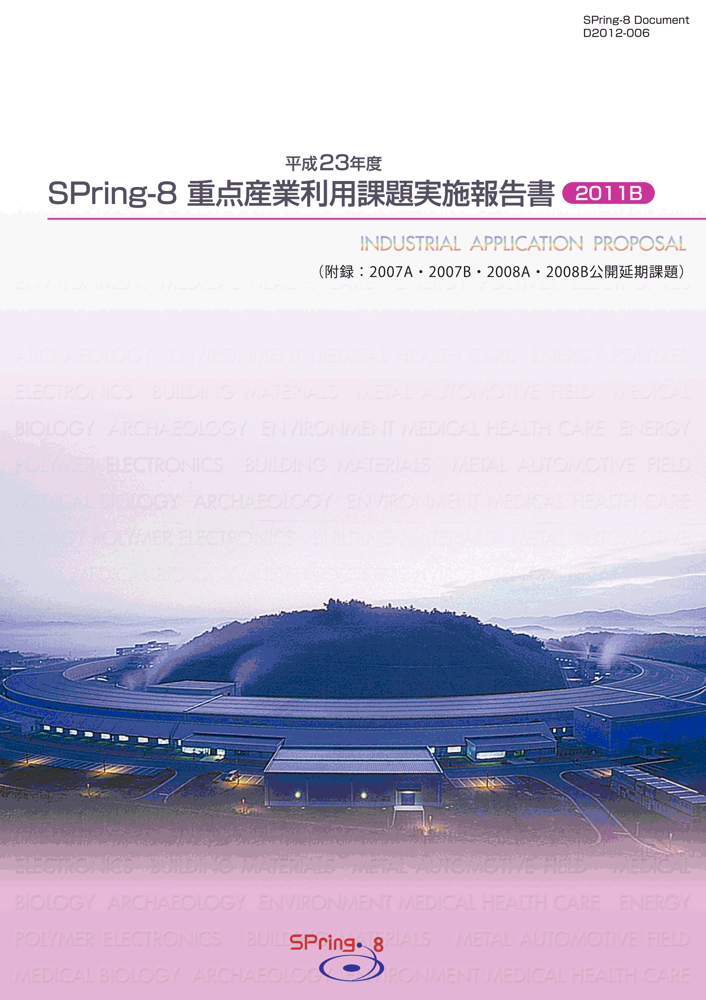
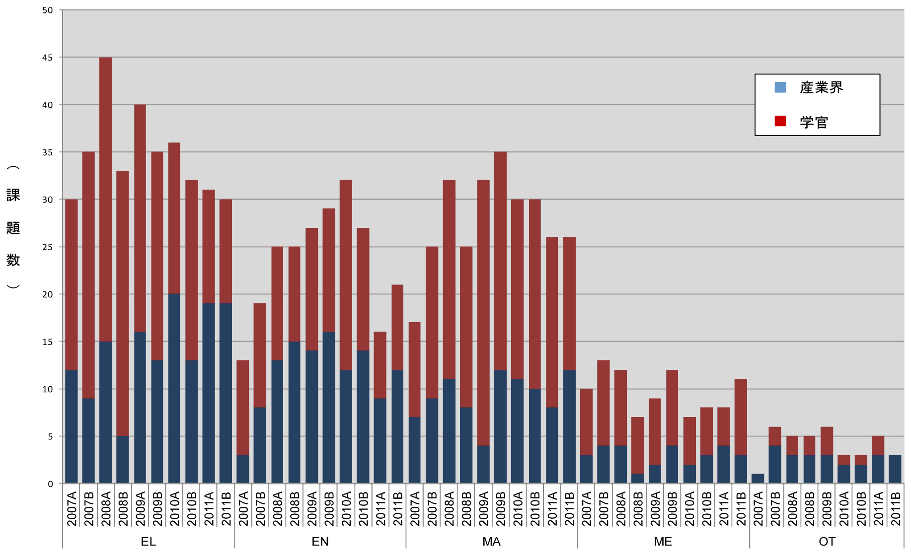
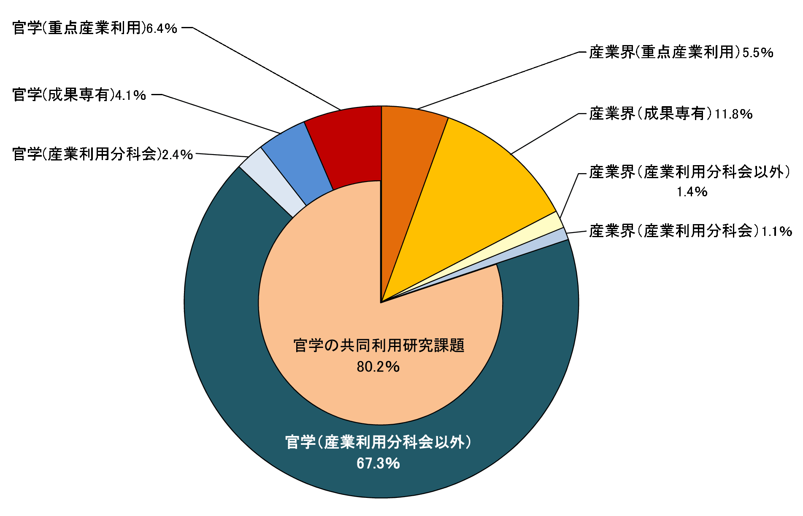
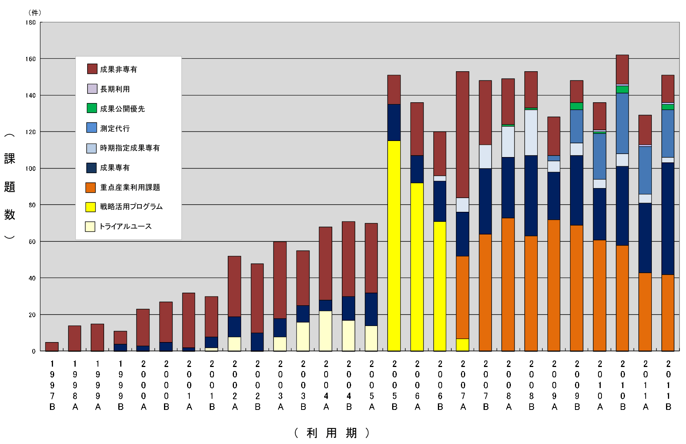
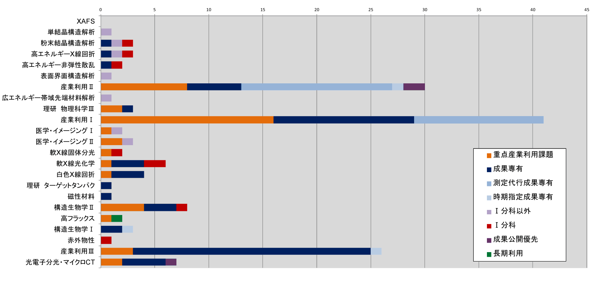
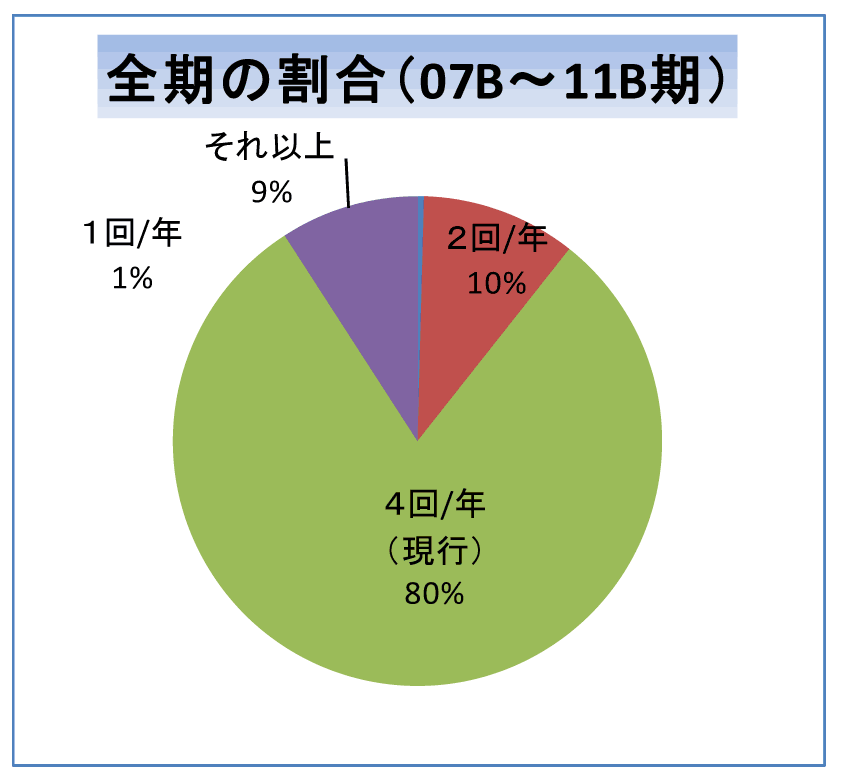
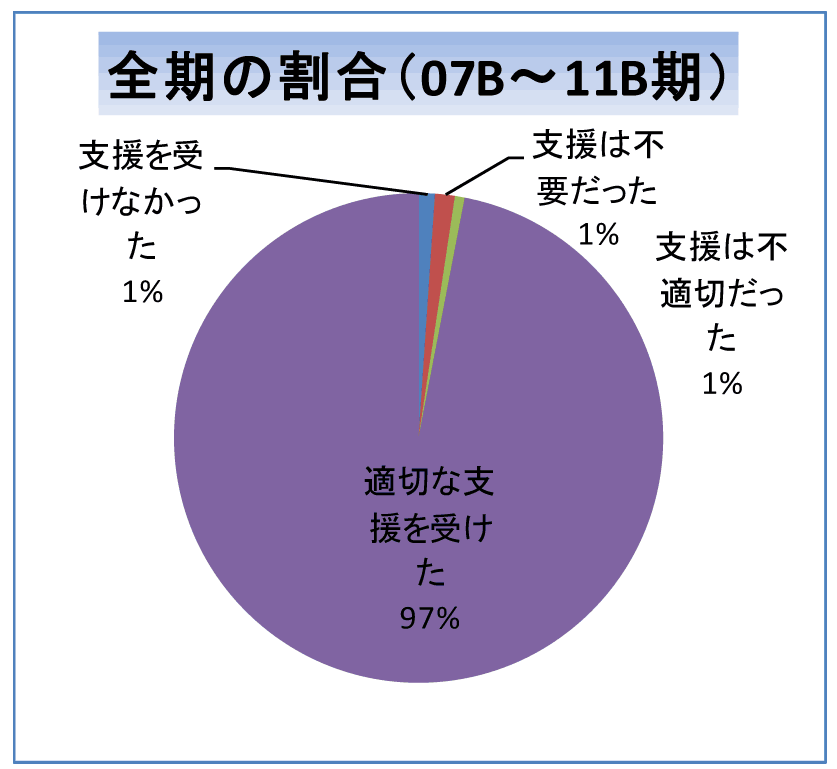
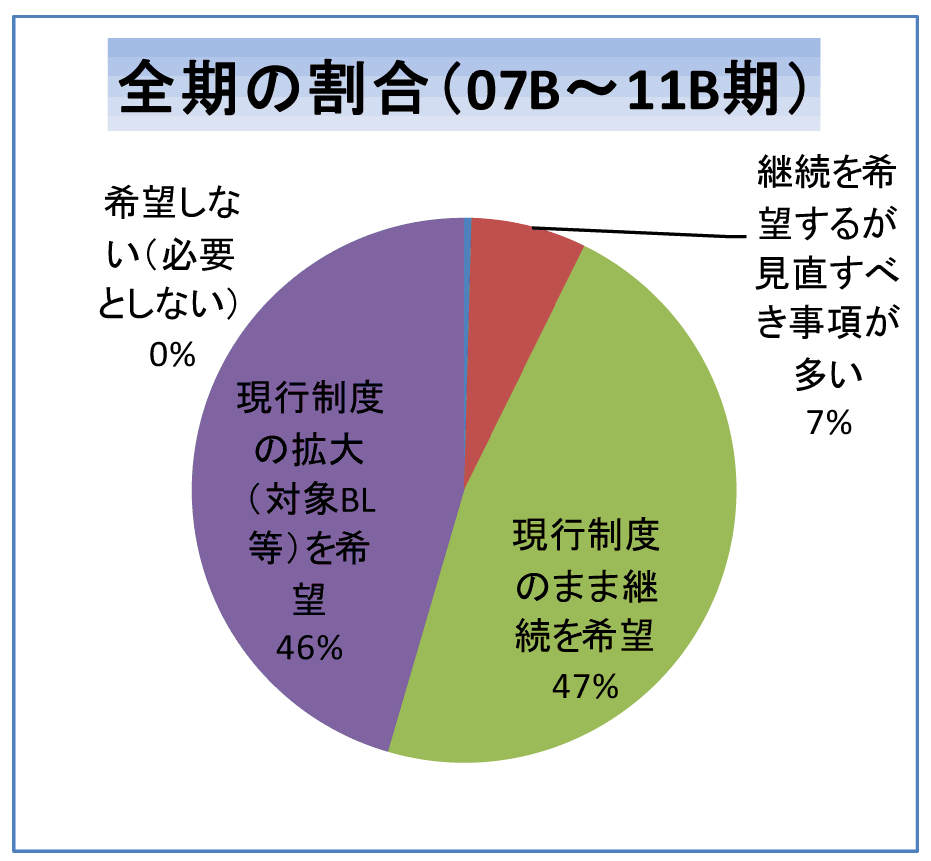

1. はじめに2. 公募の内容
3. 成果公開の考え方
4. 実施の経緯と流れ
5. 結果
6. 民間企業利用への効果
7. 利用者アンケートの結果と今後の課題
8. 報告書の採録対象
9. 課題利用報告書
* 送付を希望される方は、連絡先（氏名、所属、〒住所、E-mail）をご記入の上、 事務局 support@spring8.or.jp までE-mailでご連絡ください。
産業利用の更なる促進を目的に、平成17年度(2005B期)より文部科学省のプログラムとして先端大型研究施設戦 略活用プログラム（戦略活用プログラム）が実施されて支援体制の整備が進み、利用実績も増加すると共に産業 利用推進室の活動も軌道に乗ってきた。平成19年度（2007A期）から、重点産業利用課題は領域指定型の重点研 究課題の一つとして承認され、先に実施された戦略活用プログラムを継承する施策として位置付けて実施されて いる。なお、重点産業利用課題の実施期間は5年であるため、2011B期をもって終了する。
- 公募の分類
本プログラムで募集する課題は「新規利用者」、「新領域」、「産業基盤共通」と「先端技術開発」の4つに 分類している。
「新規利用者」とは、申請代表者が、これまで、一般課題への応募などを含め、SPring-8を利用した ことのない利用者を指している。但し、事業規模が相当程度大きく事業範囲が多岐に及ぶ企業で、これらの 企業が既に利用している場合には、既に利用している事業分野とは異なる新規分野からの新たなユーザーであれ ば、「新規利用者」として認めている。
「新領域」とは、申請者の利用経験に関係なく、これまでSPring-8で実施されたことがない産業領域、あるい は、近年開発された新手法を用いることによって新たな展開が可能になる産業領域を指している。新領域の例示 を下記に示しているが、これ以外でも新規性が認められる研究領域であれば、新領域の対象になる。
○コンクリート等建築資材⇒三次元内部構造をX線CTによる撮影
○ヘルスケア⇒毛髪や皮膚の構造をX線回折・散乱及び透視画像で解析
○医薬品原薬⇒粉末X線回折による構造解析
○硬X線光電子分光法⇒薄膜材料の内部界面の状態解析
○環境負荷物質微量分析⇒大気・水などの重金属汚染物質の化学状態
○耐腐食構造材⇒金属材料の表層やサビの構造・状態分析
○高密度記録装置⇒DVD、HDD等の新規記録材料の薄膜構造・状態分析
「産業基盤共通」とは、それぞれの産業分野に共通する課題を解決する目的、あるいは産業利用に有効な手法 の共同開発を目的として、複数の企業を含むグループが一体となって取り組むもので、新計測技術の確立、共通 課題のデータベース化等を図る研究を指している。申請代表者が複数の企業を含むグループを取りまとめて、1つ の課題として申請して頂く。ここで言う「複数の企業」とは、それぞれ参加する企業が同等かつ独立に成果を 利用できる関係にあることを想定している。したがって、産学官連携の研究グループによる利用の場合には、学 と官は「複数の企業」としてカウントされない。
「先端技術開発」とは、ユーザーが実施するイノベーション型の技術開発課題で、成果の企業業績への貢献、 あるいは社会還元を目指した研究を指している。
- 公募の回数
BL19B2（産業利用Ⅰ）、BL14B2（産業利用Ⅱ）、BL46XU（産業利用Ⅲ）の3本のビームラインは、2007B期から課題 公募を2回に分けて実施している。これら3本の産業利用ビームラインを除く共用ビームラインのうち、重点産業利 用課題にビームタイムを割り当てた対象ビームラインでは、これまで通り、2011B期の課題公募では1回である。
SPring-8を利用して得られた実験・解析結果及び成果は、以下の利用報告書に取りまとめて提出してもらう。
- 利用実験報告書（英文または和文）
利用終了日から60日以内にオンライン提出。 - 重点産業利用課題報告書（原則和文）
課題採択後に利用業務部より送付される文書に記載されている締切日までに提出。 なお、提出方法は「電子データ（原則としてMSワード）」を電子メールまたは郵送で所定の宛先に提出。
上記の2011B期の報告書のうち「利用実験報告書」は2011B期終了後60日目から2週間後にWeb上で公開
される。「重点産業利用課題報告書」は印刷公表とする。ただし、利用者が提出した重点産業利用課題
報告書について、製品化や特許取得などの理由により公開の延期を希望する場合は、公益財団法人高輝
度光科学研究センターが適当と認めた場合に限り最大2年間延期することができる（2つの報告書自体は、
締切日までに必ず提出してもらう）。また、公開延期期間満了時には、公開延期を認められた申請時
の理由に対して、結果・成果等をまとめて報告をしてもらう。
今2011B期より共用ビームラインで実施された成果非専有課題の成果公開についての扱いが変更された。
2011A期までは利用報告書（2011B期以降の利用実験報告書に対応）の公開をもって利用成果の公開とさ
れていたが、2011B期以降は学術誌上への論文掲載（博士論文も含む）、及びSPring-8利用研究成果集へ
の報告書掲載が利用成果の公開とされている。SPring-8利用研究成果集は重点産業利用報告書とほぼ同じ
様式を採用したため、重点産業利用課題報告書をSPring-8利用研究成果集として扱うことも認めている。
なお、SPring-8利用研究成果集への採録には、複数の査読者による査読審査を経て成果審査委員会での承
認が必要である。更に、従来は成果公開として扱われていた「利用報告書」が廃止となったため、重点産
業利用報告書のみが公開延期の対象となる。
- 重点領域の指定
重点産業利用課題が領域指定型の重点研究課題として、平成19年1月26日に重点領域推進委員会で 平成19年度と平成20年度の2年間指定を受けた。さらに平成20年10月2日の第6回選定委員会で平成23 年度までの継続が承認され、重点産業利用課題は領域指定型の重点研究課題（公募）として実施され ている。前記のように、本2011B期をもって終了する。 - 課題選定
課題の選考は、学識経験者、産業界等の有識者から構成される「利用研究課題審査委員会」（以下 「課題審査委員会」という。）により実施される。課題審査委員会は、「重点産業利用領域」として 領域指定された趣旨に照らして優秀と認められる課題を選定する。
審査は非公開で行われるが、申請課題との利害関係者は当該課題の審査から排除される。また、 各委員は委員として取得した一切の情報を委員の職にある期間だけでなくその職を退いた後も第三者 に漏洩しないこと、情報を善良な管理者の注意義務をもって管理すること等の秘密保持を遵守するこ とが義務付けられている。 - 審査の手順
審査は以下の手順により実施される。- 形式審査
提出された申請書類について、応募の要件を満たしているかについて審査する。 なお、応募の要件を満たしていないものは、以降の審査の対象から除外される場合がある。 - 書類審査
課題審査委員会の下に設置する産業利用分科会により、書類審査を実施する。 - 最終審査
書類審査における評価を踏まえ、課題審査委員会において審査を実施し採択課題を決定する。
- 形式審査
- 審査の観点
審査（形式審査を除く）は、以下の観点に重点を置いて実施される。- 科学技術における先端性を有すること
- 産業利用上の成果創出に資すること
- 課題分類の趣旨に合致すること
- 研究手段としてのSPring-8の必要性
- 実験内容の技術的な実施可能性
- 実験内容の安全性
- 利用者支援
コーディネーター並びに産業利用支援グループが中心となり、課題毎に担当者をおき、 BL担当者の協力の下、全所的に利用者支援を実施した。支援の内容は、重点分野における実験環境の整備、 コーディネーター及びスタッフによる実験企画・準備、実験実施、実験解析に至る技術支援などからなる。 - 利用実験
平成23年10月～平成24年2月の期間で実施された利用実験課題である。なお、これまでB期に募集していた 一年課題は、重点産業利用課題が2011B期で終了するため今期は募集していない。 - 報告
平成23年度2011B期の重点産業利用課題の実施報告は、平成25年に開催予定の「第10回産業利用報告会」等 で口頭及びポスター形式での報告を予定している。
以下に平成23年度2011B期の重点産業利用課題の応募・採択結果についてまとめる。
- 応募・採択結果
表1. 募集時期及び研究機関別応募・採択結果
＊応募数・採択数には、重点産業利用課題と同時に審査されるが、採択後は一般課題に分類され る12条課題(JASRI職員による課題)は除外している。 重点産業利用課題で不採択となり、一般課題として再審査されて採択された課題(第1回募集のみ) は採択数から除外している。募集時期 機関分類 応募数＊ 採択数＊ 採択率（%） 第1回募集 学官 61 24 39.3 産業界 60 30 50.0 合計 121 54 44.6 第2回募集 学官 33 25 75.8 産業界 15 12 80.0 合計 48 37 77.1 総計 169 91 53.8
例年、A期、B期とも募集ビームタイムが少ない第2回募集の方が採択率が低いが、2011B期は表1に 示すとおり、第1回募集の平均採択率は44.6%,第2回募集は53.8%で第1回募集の方が第2回募集より 採択率が低い。これは、冬期の電力不足への懸念から、例年に比べて1，2月のビームタイムが少 なく、それに対応して12月までのビームタイムが長くなったため、第2回募集の締め切り日が例年 より3週間程度早くなったことが原因と考えている。
- 分類
表2. 募集時期及び研究機関別・領域別採択結果
＊注）“新規利用者”もしくは“産業基盤共通”で申請された課題のうち要件を満たさない課題は “先端技術開発”に再分類して審査を行った。表2の値は再分類の結果を反映したものである。募集時期 領域分類 産業界 学官 産学官合計 第1回募集 産業基盤共通 0 0 0 新規利用者 0 2 2 新領域 9 3 12 先端技術開発 21 19 40 合計 30 24 54 第2回募集 産業基盤共通 0 1 1 新規利用者 0 1 1 新領域 3 5 8 先端技術開発 9 18 27 合計 12 25 37
表2に示すように、産業界、学官ともに先端技術開発が他の3分類よりも著しく多いことはこれまでと 同様である。新規利用者や新領域は減少傾向にあるが、これは産業界による放射光利用が定着を示唆する ものである。
- 利用報告書の公開日延期
2011B期で実施した15課題について重点産業利用課題報告書公開日延期申請が提出され、 全件が許可となった。課題の内訳は次の通りである。
○公開日延長許可：15課題
理由内訳（複数回答有り） a.知的財産権の取得のため：14課題 b.事業への適用のため：9課題 (うち8課題はa.知的財産取得と重複) c.その他の理由：0課題
○公開日延長不許可：なし
下記の表3は、2011B期に公開日延期許可された課題を分野別に分類した結果である。 2011A期までは環境･エネルギー分野に含まれる二次電池・燃料電池を対象とした課題の公 開延期申請が多かったが、今期は電池関連課題での申請はなかった。この分野の研究開発 は成果専有課題に移行したものと推定している。
表3. 分野別公開日延期許可課題
分野 課題件数 エレクトロニクス 4 環境・エネルギー 5 素材(金属・高分子等) 5 製薬・生活用品 1 その他 0 合計 15
- SPring-8利用研究成果集としての審査
前記のとおり2011B期より成果公開の扱いが変更になったため、実験責任者の希望に 応じて重点産業利用報告書をSPring-8利用研究成果集への公開文書としても扱うことも 可能とした。平成24年6月20日の時点で83課題のうち57課題がSPring-8利用研究成果集 としての審査を希望している。公開は査読審査が終了し成果審査委員会での承認後とな るため、これら57課題の報告書はここには採録されない。なお、現在の時点で査読審査 が終了し成果審査委員会で承認された課題は8件である。
- 研究機関
本プログラムでは産業界にとって有効な利用手法の開発が産学官連携により積極的 に展開されるとの観点から、民間企業のみならず、大学等の公的部門からの応募も受 け入れることにしている。採択課題に対する民間企業の割合は2009A期以降減少傾向に あるが、2011B期の採択課題に占める民間企業の割合は46.2%と最も低くなり、はじめ て半分を下回った。民間企業から応募があった課題の採択率は第1回募集、第2回募集 ともに学官の課題の採択率を上回っているため、民間企業からの重点産業利用課題へ の応募数の減少を反映したものと考えている。また、2011B期は東日本大震災後に課題 募集を行った最初の利用期であるため、震災が応募数減少の一因である可能性も考え られる。
- 新規利用者
採択された新規利用者は表2のとおり全3課題でこれまでの最低となった。新規利用 者の採択課題数は08A期以降減少傾向にあるが、それが一層明瞭になり、産業分野の利 用が“拡大”から“定着”の流れになりつつあることを示唆するものと考える。一方、 放射光利用技術が必要とされる産業分野、技術分野は年々変化するため新規利用者拡 大は今後も必要な活動テーマである。
- 産業基盤共通
複数の企業を含むグループが一体となって取り組む「産業基盤共通」の課題は、 表2に示す通り2011B期では第二回の募集で1課題が採択されたのみで、これも最低と なった。基盤共通は産業分野共通の課題解決を狙ったものであるが、基盤共通課題の 減少は、放射光利用が定着して各企業個別の課題解決に用いられるようになったもの と解釈している。
- 分野別分類
図1は、申請代表者の申告に基づいて分類した分野別採択課題数を示している。 産学官の総計ではエレクトロニクス分野（EL）の課題が多く、次いで、素材分野（MA）、 環境・エネルギー分野（EN）の順である。産業界だけに限れば、素材分野（MA）、 エレクトロニクス分野（EL）、環境･エネルギー分野（EN）の順であり、事業動向を 反映して10年前は放射光利用の中心であったエレクトロニクス分野の減少が一層明瞭 になった。なお、民間企業による環境･エネルギー分野の減少が明らかになった。 これは、二次電池や燃料電池開発で広く用いられているXAFSや粉末X線回折の利用が、 民間企業においては重点産業利用から測定代行等の成果専有課題に移行が主因と考え ている。
図2は2011B期の被災量子ビーム施設ユーザー支援課題を除いた共同利用研究実施課題
（共用ビームラインで実施した課題）において、民間企業に所属する実験責任者の課題
数が全体の19.8％であることを示している。その内訳は、重点産業利用課題が5.5％、
測定代行を含む成果専有課題が11.8％である。このように産業界によるSPring-8の利用
は成果専有が主流となりつつある。これはSPring-8利用の有用性が企業に認識されたこ
との表れと捉えている。
図3からも測定代行を含む成果専有課題が増加傾向にあり、放射光の有用性が認識され、
産業界に放射光利用技術が分析評価技術のひとつとして定着しつつあることを示唆して
いる。図4は、利用技術分野別(ビームライン別)民間企業実施課題数の応募課題分類を示
しているが、産業利用Ⅰ（BL19B2）、産業利用Ⅱ（BL14B2）、産業利用Ⅲ（BL46XU）の
3本のビームラインでは、成果専有課題の割合が他のビームラインと比較して著しく多く、
半数以上が成果専有課題である。特に、BL14B2とBL19B2では測定代行の課題数が通常の
成果専有課題を上回り、測定代行が新たなSPring-8利用の制度として民間企業に根付き
つつあることを示している。特にBL46XUでは利用成果の専有ではなく利用機会の確実な
確保のために成果専有課題を利用したと思われる例が少なからずあり、HAXPESなど産業
分野で需要の高い利用技術に供給するビームタイムが不足する状況になりつつある。
実験の効率化による採択率向上を目指した機器整備を行うとともに、HAXPES測定が可能な
共用ビームライン整備の検討が必要となりつつある。
2010A期以降、各利用期終了後に重点産業利用課題の実験責任者に対して利用制度や技術支援
についてのアンケートを実施している。2011B期も2012年5月7日より31日まで同様なアンケート
を実施して64%の回答を得た。2011B期の回答状況は2010A, 2010B, 2011A期とほぼ同じ傾向であ
るため、これまでの全アンケート結果（2007B期から2011B期、回答率68％）についてその概要を
期す。
図5、6は課題募集頻度と技術支援についてのアンケート結果である。これらの図が示すように
大多数の利用者より現行の制度や技術支援を評価していただいている。図7は重点産業利用課題
の制度継続希望の回答結果である。約90%が“現状のまま継続”もしくは“拡大”を希望と回答し、
産業分野の利用者にとって有効な制度と評価されているものと考えられる。以上のように重点産
業利用課題は大多数のユーザーから支持されている制度であるため、重点産業利用課題が終了し
た2012年以降も、年4回募集など有効な利用制度を一般課題の産業利用分野に拡大して実施してい
る。

図1. 重点産業利用課題における分野別採択課題数

図2. 2011B期 共同利用研究実施課題における民間企業の実験責任者の割合

図3. 民間企業による共同利用研究実施課題の課題分類別推移

図4. 2011B期 利用技術分野別（ビームライン別）民間企業実施課題数

図5. “適切な課題募集の頻度は”への回答

図6.“利用実験時のSPring-8側の技術支援は適切でしたか”への回答

図7.“重点産業利用課題に類した制度の継続を希望されますか“への回答
この実施報告書に掲載される課題報告書は、2011B利用期に実施された課題のうち、 利用報告書公開日延期申請許可となったものは除いている。